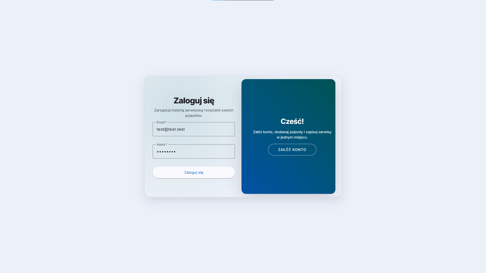

AutoLogix
AutoLogix to system do zarządzania pojazdami: profil auta, historia serwisowa oraz procesy okołoubezpieczeniowe w jednym miejscu. Aplikacja jest wielorólowa — właściciel, serwisant i ubezpieczyciel mają różne widoki oraz uprawnienia.
Backend to ASP.NET Core Web API w podejściu DDD, z JWT i kontrolą dostępu opartą o własność danych (użytkownik operuje wyłącznie na swoich pojazdach i wpisach).
- Angular
- .NET
- ASP.NET Core Web API
- EF Core
- PostgreSQL
- JWT + role-based authorization
- DDD (Domain / Application / Infrastructure / Api)
Co potrafi aplikacja
AutoLogix łączy techniczne dane pojazdu, historię napraw i przeglądów oraz logikę ubezpieczeniową w spójny „profil pojazdu”. System został zaprojektowany z myślą o realnym scenariuszu biznesowym — z wyraźnym podziałem ról, kontrolą uprawnień i przewidywalnym API.
- Rejestracja i logowanie użytkownika (JWT Bearer).
- CRUD pojazdów: lista, szczegóły, dodawanie, edycja i usuwanie.
- Historia serwisowa w kontekście pojazdu (nested routing, paginacja).
- Alerty terminów polis OC/AC i okna czasowe dostępności działań.
- Flow ubezpieczeniowy: prośba o ofertę → oferta ubezpieczyciela → akceptacja/odrzucenie.
- Role-based UI: widoki i akcje zależne od roli (User / Service / Insurer / Admin).
Architektura i bezpieczeństwo
Backend został zaprojektowany w podejściu DDD, z wyraźną separacją
odpowiedzialności między warstwami. Kontrolery zwracają
DTO mapowane ręcznie, a logika bezpieczeństwa
opiera się na kontekście użytkownika z JWT (claim
userId) oraz zasadzie „ownership”.
-
JWT Bearer – każdy prywatny endpoint wymaga
nagłówka
Authorization: Bearer <token>. - Własność danych – użytkownik widzi/modyfikuje tylko swoje pojazdy, a wpisy serwisowe są dostępne wyłącznie przez pojazdy użytkownika.
- Nested routing dla historii serwisowej
- Paginacja na listach (pojazdy i serwisy) + stabilne kody HTTP.
- Konfiguracja produkcyjna przez zmienne środowiskowe (sekrety JWT, connection string), przygotowane pod deploy.
Co wyróżnia AutoLogix
- Architektura DDD z wyraźną separacją warstw
- Wielorólowa logika dostępu (User / Service / Insurer / Admin)
- Walidacja własności danych (vehicle → user)
- REST API z paginacją i nested routing
- Spójny kontrakt odpowiedzi i stabilne kody HTTP
Projekt został zaprojektowany jako spójny system biznesowy z naciskiem na kontrolę dostępu, przewidywalność API i możliwość dalszego rozwoju bez naruszania struktury domeny.
Zajrzyj do środka aplikacji
Ekran logowania
Demo online
Konta testowe: możesz zalogować się za pomocą kont demo lub założyć własne konto użytkownika. Rejestracja dotyczy wyłącznie roli Użytkownik.
insurer@autologix.dev
Dev123!@#
service@autologix.dev
Dev123!@#
test@test.test
zaq1@WSX
Uwaga: API działa na darmowym planie hostingu, więc po dłuższej bezczynności może się „uśpić”, a pierwsza odpowiedź może potrwać dłużej. Baza danych to PostgreSQL na Neon (również free tier), więc sporadycznie pierwszy request po przerwie może mieć wyższe opóźnienie.
Jeśli chcesz szybciej „wybudzić” API, możesz wejść w endpoint zdrowia: /health?db=true